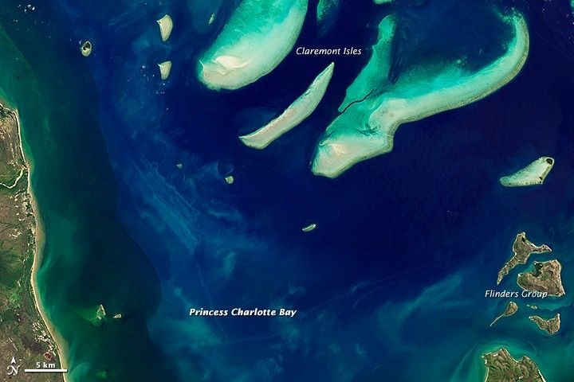
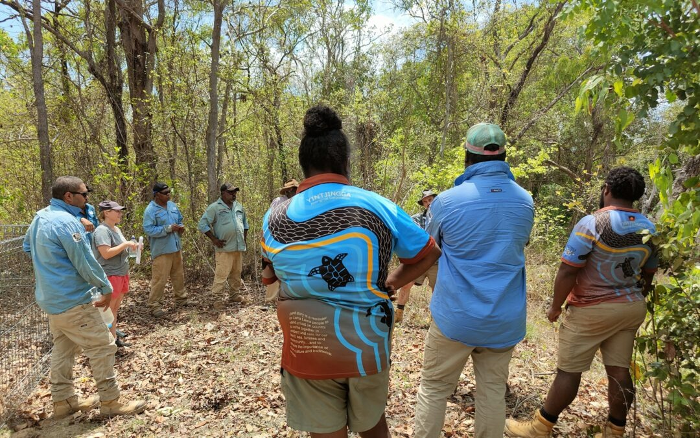
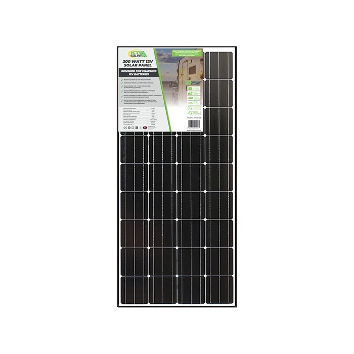
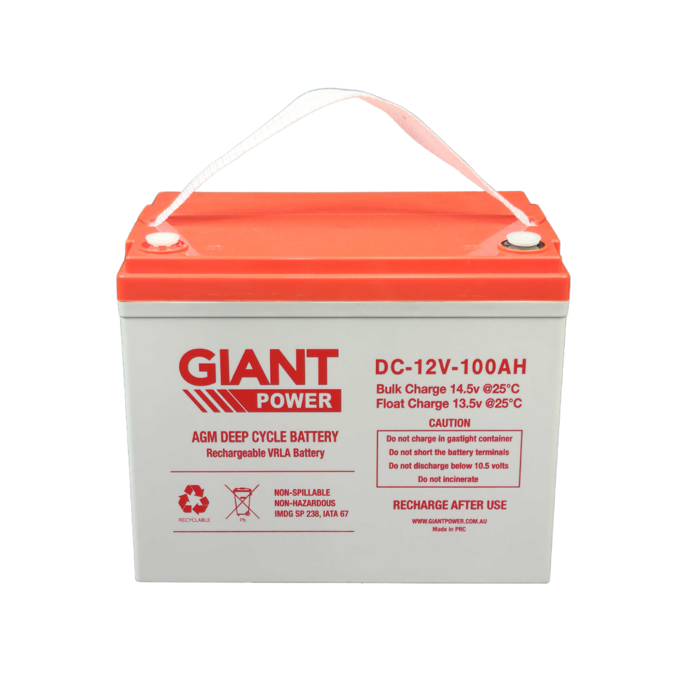
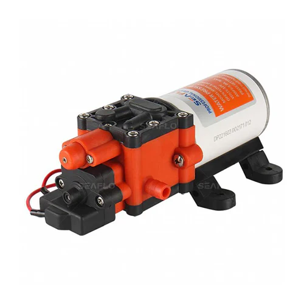
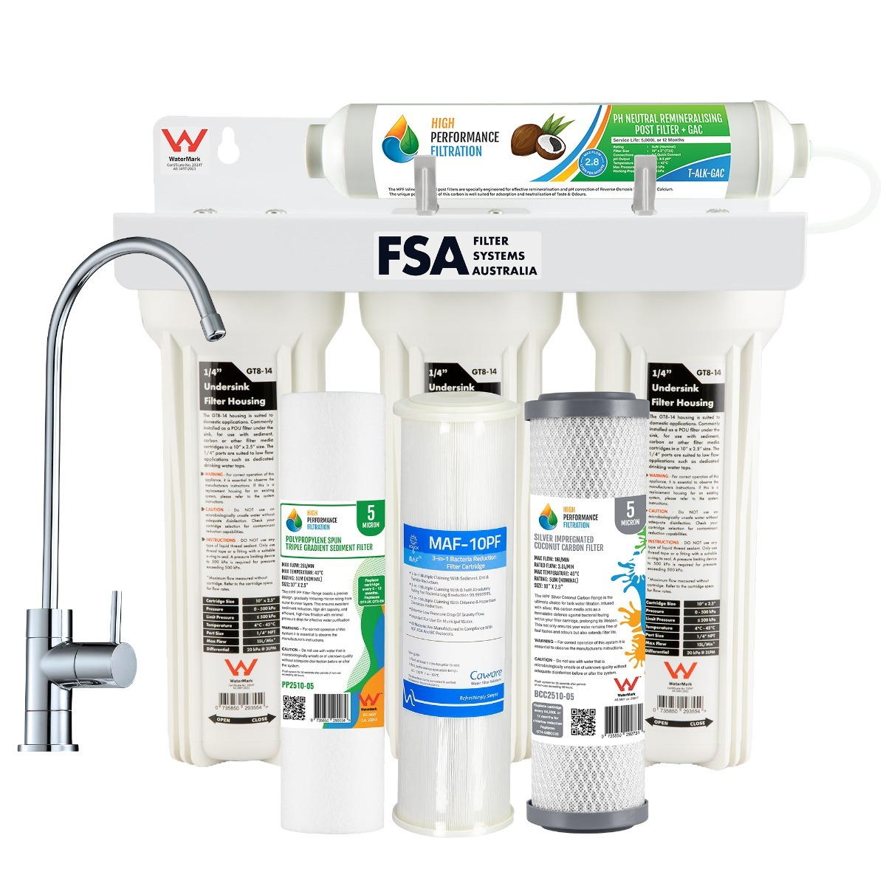
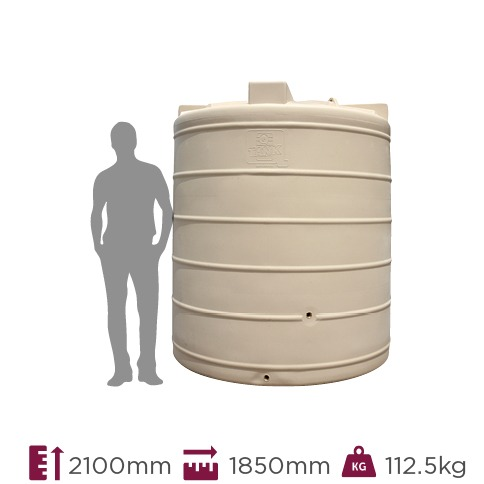
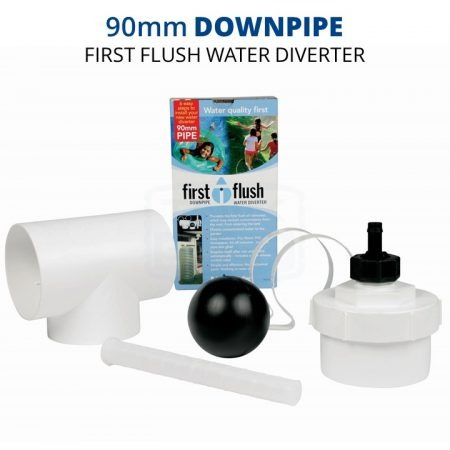
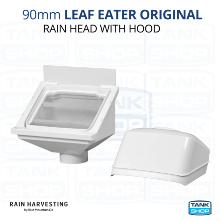
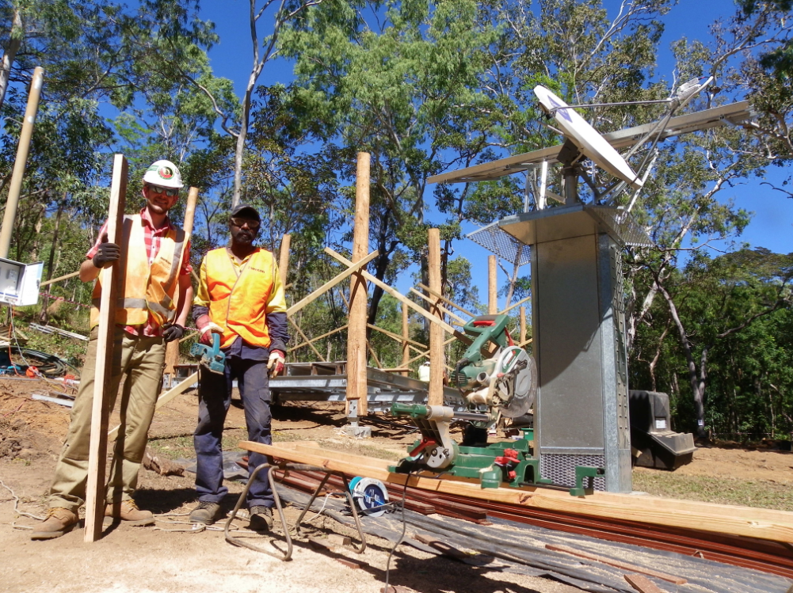

A simple, off-grid rainwater harvesting and filtration system designed in partnership with the Yintjingga Aboriginal Corporation for the Lama Lama community at Port Stewart, Far North Queensland.
The project addresses the long-standing lack of safe drinking water at Port Stewart through a low-cost, low-maintenance system that combines wet-season rainwater harvesting, three-stage filtration, a solar-powered pump, and sealed storage. The design has been developed in respectful response to the priorities of the Yintjingga Aboriginal Corporation (YAC) and the Lama Lama Land Trust.

NASA Landsat 8 image of Princess Charlotte Bay on Queensland's Cape York Peninsula. Source: NASA Earth Observatory.
The Lama Lama people are the Traditional Owners of lands extending several hundred kilometres along Princess Charlotte Bay in eastern Cape York Peninsula, Queensland, beginning north at Massey River and ending at the Normanby River (Lama Lama Aboriginal Corporation, n.d.). They identify as "sand beach people" and "saltwater people" — terms that reflect a deep cultural connection to coastal landscapes and marine resources.
In 1961, Lama Lama people were forcibly removed from Yintjingga (Port Stewart) by Queensland authorities and dispersed to distant settlements. From the 1970s onwards, families gradually returned to Country, and by 2011 the community had regained ownership of most of its traditional lands (Lama Lama Aboriginal Corporation, n.d.).
Today, the Yintjingga Aboriginal Corporation (YAC), established in 2009 by Lama Lama Traditional Owners in Coen and Port Stewart, coordinates social, cultural, environmental, and economic programs on Country (Office of the Registrar of Indigenous Corporations, 2016). YAC manages the well-regarded Lama Lama Rangers program and acts as the principal point of partnership for external organisations working with the community, including Engineers Without Borders Australia (EWB).
For decades, lack of safe drinking water has limited the Lama Lama community's ability to live continuously on Country, particularly during the dry season, when the resident population of approximately 50 people can swell to nearly 100 with returning family members and visitors (Yaru Water, 2024).
Engineers Without Borders Australia has identified water-supply issues on Lama Lama Country and the need for detailed design to support new infrastructure. Because river-water quality risks require specialist testing not currently in place at Port Stewart, the design prioritises harvested rainwater as the primary potable source (Engineers Without Borders Australia, 2025).
Studies of drinking water in remote Northern Australian communities have shown high microbial diversity in source-to-distribution systems and the presence of opportunistic pathogens, underscoring the need for both treatment and storage solutions appropriate to remote, off-grid settings (Kaestli et al., 2019).

EWB Australia has worked alongside YAC on water access at Port Stewart for over a decade. In 2024, the Yaru Foundation pledged AUD $40,000 toward a rainwater harvesting, filtration, and solar-pump system co-designed with Arup and the Centre for Appropriate Technology (Yaru Water, 2024). This system represents the current state-of-the-art on-Country solution.
However, it is funded through philanthropic donations, is centralised on one rooftop, and does not include a documented, replicable design that could be extended to additional clan estates or scaled to other Indigenous communities with similar conditions. Our project addresses this gap with a documented, modular, cost-transparent design that the community and other Aboriginal Corporations could replicate, scale, and own.
The Lama Lama community at Port Stewart needs a reliable, affordable, and culturally appropriate supply of safe drinking water that functions through both wet and dry seasons, operates without grid electricity, and can be maintained on-Country by the community.
Lama Lama Rangers and resident families at Port Stewart currently rely on a combination of surface water (which contains unsafe levels of heavy metals), seasonal rainwater (collected informally and not stored at scale), and occasional purchases of bottled water from Coen — which is expensive and impractical in the wet season.
A permanent, on-Country drinking-water system that delivers a consistent volume of treated water at the tap, requires only seasonal cartridge changes, and is fully controlled by the community.
The following five criteria were developed in response to community priorities documented by EWB and YAC, and are used in the decision matrix in the next section.
Meets the Australian Drinking Water Guidelines for microbial and chemical parameters. Highest priority — protects children and Elders.
Functions without mains electricity, and remains operable through cloudy days of the wet season.
Capital and operating costs low enough that the community can fund maintenance from existing income streams.
Parts available through Cairns/Coen suppliers; repairs achievable by Lama Lama Rangers with introductory training.
Zero emissions, no chemical dosing, no disturbance of culturally significant sites along the river foreshore.
Each option addresses the same problem but takes a different technical approach. All were adapted from existing solutions used in remote and off-grid settings, with modifications to suit the Port Stewart context.
Drill a small borehole into local groundwater and equip it with an Afridev-style hand pump and in-line chlorine dosing. Bypasses heavy-metal contamination of surface water (Engineers Without Borders Australia, 2017).
+ Strengths: Very low ongoing cost, proven design, high social acceptance.
− Weaknesses: Groundwater in coastal Cape York may itself contain salts or heavy metals; requires specialist drilling contractors; chlorine introduces an unwanted chemical input.
Pump water from the Stewart River through a pre-filter and UV-disinfection chamber, store in a roof-mounted tank, with a small diesel generator backup (Engineers Without Borders Australia, 2022).
+ Strengths: High disinfection efficacy, no chemical residue, continuous river source.
− Weaknesses: UV does not remove heavy metals — the main contaminant in Stewart River water; diesel backup requires fuel deliveries impractical in wet season; UV lamps require annual replacement.
Capture rainwater from an existing rooftop, store in a 5,000-litre tank, treat through three-stage filtration, pressurise with a 12 V DC solar pump into a sealed header tank with a tap (Yaru Water, 2024).
+ Strengths: Rainwater avoids heavy metals and salt; solar suits off-grid setting; all components available in Queensland; aligns with existing rooftop infrastructure.
− Weaknesses: Relies on sufficient wet season; tank footprint must be agreed with YAC.
Each option was rated 1 (poor fit) to 5 (excellent fit) for each criterion, multiplied by the criterion weight. Weights reflect community priorities: safety highest, followed by off-grid operability, maintainability, affordability, and cultural & environmental fit.
| Criterion | Weight | Opt. 1 Borehole |
Opt. 2 River + UV |
Opt. 3 Rainwater |
|---|---|---|---|---|
| Drinking-water safety | 5 | 3 (15) | 3 (15) | 5 (25) |
| Off-grid operability | 4 | 5 (20) | 2 (8) | 5 (20) |
| Maintainability | 3 | 4 (12) | 2 (6) | 4 (12) |
| Affordability | 3 | 4 (12) | 2 (6) | 4 (12) |
| Cultural & environmental fit | 2 | 3 (6) | 2 (4) | 5 (10) |
| Total weighted score | /85 | 17 | 39 | 83 |
Option 1 (borehole) scored well on operability and maintainability but received only a moderate safety rating because of unknown groundwater chemistry in coastal Cape York. Option 2 (river + UV) scored lowest because UV cannot remove the heavy metals identified by EWB in Stewart River water (Engineers Without Borders Australia, 2025), and the diesel backup undermines off-grid operability. Option 3 scored highest on safety (rainwater is the cleanest local source) and on cultural and environmental fit (zero emissions, no chemicals, no disturbance of riparian zones).
Option 3 — Rainwater Harvesting with Multi-Stage Filtration and Solar Pump — was selected with a weighted score of 83 out of a possible 85. The selection is consistent with the approach that EWB and YAC have themselves pursued in the funded pilot project (Yaru Water, 2024), which provides strong external validation.
Aakurru Water is a five-stage system: (1) rainwater capture from an existing rooftop; (2) first-flush diverter and leaf screen; (3) bulk storage in a 5,000-litre poly tank; (4) a three-stage filter housing (sediment, activated carbon, ultrafiltration); (5) a 12-volt DC solar-powered pump feeding a sealed 1,000-litre header tank with a tap. The system delivers approximately 1,000 litres of treated drinking water per day to a community of up to 30 people.
All components are commercially available in Australia. The reference products below were verified against retailer/manufacturer pages during research; final procurement should obtain current quotes including freight to Coen.







Product images shown for reference only, hot-linked from retailer/manufacturer pages. Final procurement requires current supplier quotes including freight to Cape York.
Because the full system cannot be assembled on-campus, the team prototyped the most uncertain subsystem: the three-stage filtration unit feeding a small reservoir under solar-pump pressure. The team needed to confirm that low-pressure DC pumping could drive water through three filter stages in series at acceptable flow, and that the assembled filter could meaningfully improve water quality in a single pass.
A bench-scale prototype was built using a 20 L food-grade plastic drum as a feed tank, three off-the-shelf clear filter housings connected in series with John Guest push-fit fittings, a 12 V DC diaphragm pump powered by a small benchtop solar panel and a 12 V sealed lead-acid battery, and a 5 L plastic jerry can as the output reservoir. The footprint of the rig was approximately 0.5 m × 1 m. The clear filter housings allow visible inspection of sediment accumulation in the first stage.
The prototype demonstrated stable flow under solar-pump pressure and visible turbidity improvement after a single pass when fed with deliberately fouled water. Quantitative water-quality validation (microbial testing, turbidity measurement, pressure logging) was outside the team's lab access; the system relies on the published 0.1 μm pore rating of the ultrafiltration stage for pathogen reduction and on Australian rainwater treatment guidance for the broader filter justification (NSW Health, n.d.). A future deployment should include independent water-quality testing.
After bench testing, two modifications were incorporated into the final design specification. First, a pressure-relief valve was added downstream of the pump to protect the first filter housing during pump start-up. Second, quick-release couplings were specified for the filter housings so that Rangers can replace cartridges without tools.
The implementation process places the Lama Lama community at the centre of the work, fits within a single dry-season visit, and leaves the system fully under community control at handover.

The design team travels to Port Stewart with a YAC liaison. The team confirms the rooftop chosen for collection, the location of both tanks, the cable run for the solar panel, and any cultural protocols around the chosen site.
All components are ordered from Cairns and Brisbane suppliers, freighted to Coen, and partially pre-assembled (filter housings, pump, electrical panel) to minimise on-site work.
The team works alongside Lama Lama Rangers to install gutters, the first-flush diverter, both tanks, the filter and pump, and the solar panel and battery. Rangers participate in every step so that they understand each connection.
A practical training session is delivered for Rangers and any other interested community members. The session covers cartridge replacement, battery checks, tank cleaning, and basic troubleshooting. A bilingual one-page reference (English and Lama Lama, prepared with YAC) is left at the system and at the Rangers' office.
Monthly check-in calls with YAC for the first year, plus an annual return visit to inspect the system and replace consumables. After 12 months, the system is fully community-managed with only on-call support.
The system will be evaluated against three indicators: (1) volume of treated water delivered per month, recorded by a simple in-line flow meter; (2) qualitative feedback from Rangers and Elders, collected during quarterly YAC community meetings; and (3) cost per litre of treated water, computed annually from cartridge replacement records. A successful first year is defined as at least 200,000 litres delivered, no reported safety concerns, and an operating cost below AUD $200.
By the end of the first year, system ownership rests fully with YAC. Rangers trained on the unit can install additional modules at other outstations in the Lama Lama estate, supporting the corporation's long-standing aim of restoring permanent occupation across Country (Centre for Appropriate Technology, 2010). If a component fails, the repair pathway is: Rangers consult the bilingual reference card; if needed, call the on-call support line; replacement parts are ordered from listed suppliers and freighted via the regular Coen mail run.
Capital costs below are for one complete system serving approximately 25–30 people. Prices in Australian dollars, estimated against listings at Bunnings, Total Tools, Solar Online Australia and Pump Warehouse during preparation of this report.
| Item | Specification / Source | AUD |
|---|---|---|
| Solar panel and battery | KT Solar 200W panel (Bunnings); 100Ah AGM (Aussie Batteries/Renogy); charge controller | ~$1,200 |
| Solar-powered pump | 12V DC diaphragm pump, ~5 L/min (Seaflo AG-22 via Perth Irrigation) | ~$300 |
| Filtration unit and cartridges | Filter Systems Australia GT1-38TMAFCC (3-stage incl. 0.1μm) | ~$635 |
| Storage tanks | 5,000 L potable poly tank (QTank/Tank Shop), 1,000 L sealed header tank | ~$1,300 |
| Piping, rain-harvesting accessories and frame | First-flush diverter, leaf-eater rain head, PVC pipes, fittings, galvanised frame (all Bunnings) | ~$400 |
| Installation and training labour | Award-baseline (Fair Work MA000020) + travel, accommodation, remote allowances | Quote |
| Remote freight to Coen | Sea Swift / Tuxworth & Woods / Petersons Transport — surcharges may apply | Quote |
| Materials subtotal | ~$3,835 | |
| TOTAL INDICATIVE COST (with labour + freight contingency 15-25%) | ~$5,000–$6,000 |
Annual operating costs are estimated at approximately AUD $150, comprising replacement filter cartridges (sediment and carbon cartridges every 6 months at ~$30 each, ultrafiltration cartridge every 18 months at ~$80) and minor consumables such as O-rings. The battery is the only component with a defined replacement schedule: a quality deep-cycle battery should last 7–10 years before replacement at approximately AUD $400.
At end-of-life, poly tanks can be recycled through Queensland tank recyclers (currently free at Cairns depots); the solar panel can be returned to the supplier under the Australian PV Stewardship scheme; the battery must be returned to a battery recycler. No hazardous chemicals to dispose of.
Three potential funding pathways for YAC to investigate: Indigenous Advancement Strategy (IAS) administered by NIAA (National Indigenous Australians Agency, n.d.); Queensland Remote Indigenous Land and Infrastructure Program Office (RILIPO) facilitating infrastructure across remote communities including Coen (Queensland Government, n.d.-d); and philanthropic partnerships such as the Yaru Foundation, which has pledged AUD $40,000 for Lama Lama clean water (Yaru Water, 2024). Each module at ~$5,000–6,000 falls within typical grant micro-funding limits, simplifying applications.
The team members listed below confirm that they contributed directly to this report. In accordance with the assessment requirements, the non-contributing former team member is not listed.
| Member | Project Contributions |
|---|---|
| Trung Hieu Pham 25111701 |
Website design and build (GitHub Pages); final report drafting and integration; decision matrix; presentation slides 5–7; cost analysis structure; coordination of evidence integration. |
| Liukuan Li 14740512 |
Comprehensive evidence research (53+ verified sources); identification and correction of five critical accuracy issues; APA referencing; presentation slides 8–12. |
We respectfully acknowledge the Lama Lama people as the Traditional Owners of the lands and waters of Port Stewart and Princess Charlotte Bay, where this design is intended to be implemented. We acknowledge their continuing connection to land, sea, and culture, and pay our respects to their Elders past, present, and emerging. We also acknowledge the Gadigal people of the Eora Nation, on whose unceded lands the University of Technology Sydney stands and on which this project was developed.
This design proposal has been prepared in the spirit of listening and learning. We acknowledge that the Lama Lama people, through the Yintjingga Aboriginal Corporation and the Lama Lama Land Trust, are the experts on their own Country, and that any successful solution must be community-led.
Australian Institute of Aboriginal and Torres Strait Islander Studies. (2023). Lama Lama people. https://aiatsis.gov.au/
Centre for Appropriate Technology. (2010). Community planning with the Lama Lama people. https://www.cfat.org.au/community-planning-with-the-lama-lama-people
Engineers Without Borders Australia. (2017, June 6). Launch of Lafaek Water Social Enterprise Project, Timor-Leste. https://ewb.org.au/
Engineers Without Borders Australia. (2022, April 5). Solar is powering a water supply for an island on the Mekong. https://ewb.org.au/
Engineers Without Borders Australia. (2024). EWB Challenge 2024: Port Stewart, Lama Lama community. https://ewbchallenge.org/
Engineers Without Borders Australia. (2025, May 14). The power of partnerships: unlocking access to clean water on Lama Lama Country. https://ewb.org.au/blog/2025/05/14/the-power-of-partnerships-unlocking-access-to-clean-water-on-lama-lama-country/
International Renewable Energy Agency. (2021). Solar water pumping for rural areas. https://www.irena.org/
Kaestli, M., O'Donnell, M., Rose, A., Webb, J. R., Mayo, M., Currie, B. J., & Gibb, K. (2019). Opportunistic pathogens and large microbial diversity detected in source-to-distribution drinking water of three remote communities in Northern Australia. PLoS Neglected Tropical Diseases, 13(9), e0007672. https://doi.org/10.1371/journal.pntd.0007672
Lama Lama Aboriginal Corporation. (n.d.). About us. https://www.lamalama.org.au/about-us/
Office of the Registrar of Indigenous Corporations. (2016). Taking care of country. https://www.oric.gov.au/corporations-and-registers/corporation-stories/taking-care-country
Queensland Government. (2023). Lama Lama National Park. https://parks.des.qld.gov.au/parks/lama-lama
United Nations. (2023). Sustainable Development Goal 6: Clean water and sanitation. https://sdgs.un.org/goals/goal6
World Health Organization. (2022). Drinking-water. https://www.who.int/news-room/fact-sheets/detail/drinking-water
Yaru Water. (2024, October 10). Supporting safe drinking water for the Lama Lama community. https://yaruwater.com/blogs/news/supporting-safe-drinking-water-for-the-lama-lama-community